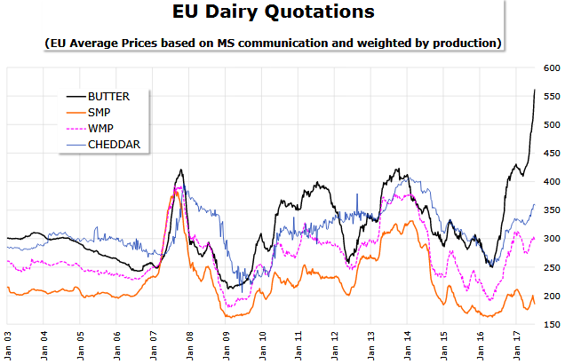

Mas³o podro¿a³o i to mocno – za kostkê p³acimy blisko dwukrotnie wiêcej ni¿ rok temu. Mo¿na z tego powodu narzekaæ i przeklinaæ, na czym œwiat stoi. Mo¿na oskar¿aæ sklepikarzy, producentów czy polityków. Mo¿na te¿ zag³êbiæ siê w prawdziwe przyczyny wzrostu cen.
W tym roku œmia³o mo¿na jednak prognozowaæ zmiany w wielkoœci konsumpcji, w³aœnie ze wzglêdu na wzrost cen. Oczywiœcie, w przeciwieñstwie do wspomnianych ju¿ czasów s³usznie minionych, w Polsce nie ma jednej ceny mas³a – hipermarket i sklep osiedlowy maj¹ zarówno inne poziomy kosztów, jak i mar¿ detalicznych. Obecnie nawet w dyskontach zap³acimy oko³o 5-6 z³otych za kostkê. To poziomy cen dalece odbiegaj¹ce od tych, do których przez lata zd¹¿yliœmy siê przyzwyczaiæ. Wa¿na uwaga – przed laty kostki zazwyczaj wa¿y³y 250 g, w pewnym momencie wagê obni¿ono do 200 g, by zachowaæ ceny, do których Polacy siê przyzwyczaili (to nie tylko ciekawostka, ale informacja istotna przy stosowaniu dawnych przepisów kulinarnych).
Pewnym punktem odniesienia dla cen mas³a na pó³kach sklepowych mog¹ wiêc byæ ceny na rynkach hurtowych, o których regularnie informuj¹ rozmaite instytucje publiczne. Najwygodniej jednak pos³u¿yæ siê notowaniami w serwisie SpotData – na wykresie widzimy zagregowane dane z cotygodniowych biuletynów Ministerstwa Rolnictwa i Rozwoju Wsi.
Rzut oka na twarde dane nie pozostawia w¹tpliwoœci – ceny mas³a w ostatnich tygodniach wystrzeli³y do historycznych rekordów. 22 z³ote za kilogram mas³a to o 72 proc. wiêcej ni¿ na pocz¹tku lipca 2016 r. Jak równie¿ widaæ na wykresie, w przesz³oœci ceny mas³a podlega³y wahaniom, lecz nigdy nie zanotowa³y takiego wystrza³u po uprzednim mocnym wyhamowaniu.
Drobnym pocieszeniem mo¿e byæ to, ¿e na zachodzie Europy ceny wzros³y nawet mocniej: we Francji o 80 proc., w Niemczech i Holandii o 90 proc., a we W³oszech nawet o 100 proc. w porównaniu do analogicznego okresu ubieg³ego roku. Nic wiêc dziwnego, ¿e francuskie „Le Figaro” obawia siê, ¿e wzrosn¹ ceny croissantów, brytyjski „Guardian” ju¿ teraz ostrzega przed niedoborami mas³a przed œwiêtami Bo¿ego Narodzenia, a niemiecki „Die Welt” bije na alarm, og³aszaj¹c najwy¿sze ceny mas³a w najnowszej historii. Innymi s³owy – przyczyn wzrostu cen mas³a szukaæ nale¿y poza Polsk¹, a nawet poza Europ¹.
Odt³uszczony problem w proszku
Nim przejdziemy do drugiej, popytowej strony medalu, warto zrobiæ krótk¹ przerwê, aby zaj¹æ siê samym procesem produkcyjnym mas³a. Zapewne ka¿dy wie, ¿e robi siê je (najczêœciej) z mleka krowiego, jednak to dopiero pocz¹tek brzemiennej w ekonomiczne skutki historii.
- Mamy litr mleka krowiego zawieraj¹cy œrednio 4 proc. t³uszczu. Mo¿emy przeznaczyæ ten litr na mleko spo¿ywcze 3,2 proc., jednak wtedy zostanie nam niewiele t³uszczu. Mo¿emy ca³y t³uszcz zebraæ, sprzedaæ mas³o, œmietanê lub œmietankê w proszku, a zostawiæ samo odt³uszczone mleko. Biznes robi siê, patrz¹c z punktu widzenia t³uszczu i pozosta³oœci, sumarycznie. Na jednym produkcie siê traci, na innym siê zyskuje – t³umaczy Lech Karendys z SM Mlekpol.
To w³aœnie odt³uszczone mleko w proszku (OMP, ang. SMP) jest jednym z istotnych czynników stoj¹cych za obecnymi cenami mas³a. Lata „mlecznej górki” doprowadzi³y do powstania zapasów tego produktu. Spora w tym rola interwencyjnego skupu prowadzonego przez Komisjê Europejsk¹, który pierwotnie wspiera³ rolników i producentów, a teraz jest dla nich sporym problemem – kilkaset tysiêcy ton sproszkowanego mleka wci¹¿ mo¿e wywieraæ negatywn¹ presjê na ceny produktu ubocznego produkcji mas³a
W efekcie zamiast pakietu „mas³o i odt³uszczone mleko w proszku”, kierowani ch³odn¹ kalkulacj¹ ekonomiczn¹ producenci przeznaczali mleko na produkcjê np. serów czy pe³not³ustego mleka w proszku. Poda¿ tych dóbr ros³a dziêki czemu nie dosz³o do takiego wystrza³u ceny, jak w przypadku mas³a.

- Mamy taki paradoks, ¿e mimo wszystko produkcja mas³a spada. Jest to zwi¹zane z tym, ¿e pozostaj¹cy z produkcji mas³a surowiec wykorzystywany jest do produkcji OMP, która obecnie jest ma³o op³acalna. Dlatego skupione mleko producenci wol¹ przeznaczaæ na produkcjê innych wyrobów, np. serów, których ceny równie¿ wzros³y – mówi Pawe³ Wyrzykowski, ekonomista banku BG¯ BNP Paribas.
Apetyt biedniejszych…
Zgodnie z wczeœniejsz¹ obietnic¹, zajmijmy siê teraz stron¹ popytow¹. Na wykresie spo¿ycia per capita zabrak³o jednego, bardzo istotnego kraju – Chin. Przeciêtnie ka¿dy z 1,3 mld mieszkañców Pañstwa Œrodka spo¿ywa rocznie jedynie 0,1 kg mas³a (a wiêc 43-krotnie mniej od statystycznego Polaka), lecz mimo to kraj za Wielkim Murem pozostaje zdecydowanie najwiêkszym importerem tego oraz innych produktów mlecznych.
W ostatnich kilkunastu miesi¹cach, kiedy poda¿ mleka i mas³a wyraŸnie wyhamowa³a, globalny popyt by³ jednoczeœnie podbijany przez wzrost zapotrzebowania w Chinach. Doœæ powiedzieæ, ¿e w 2016 r. – czyli, jak ju¿ wspomnia³em, roku obni¿onej produkcji w UE i u innych eksporterów - Pañstwo Œrodka zwiêkszy³o import produktów mlecznych o 20 proc., w tym mas³a o 15 proc., serów o 29 proc., mleka w proszku o 20 proc., a jogurtu i maœlanki o ponad 100 proc. w stosunku do 2015 r. Ponadto, jak nieoficjalnie przyznaj¹ polscy producenci, tajemnic¹ poliszynela jest, ¿e mimo obowi¹zuj¹cego embarga, mas³o z Europy znów pewnymi kana³ami trafia na rynek rosyjski.
 Dane za rok obecny (oraz prognozy KE) wskazuj¹, ¿e g³ówni importerzy produktów mlecznych maj¹ na nie mniejszy apetyt ni¿ w 2016 r. W przypadku samego mas³a roczny wzrost w okresie styczeñ-maj wyniós³ jedynie 2,3 proc. Do Chin, Meksyku i USA, warto dodaæ jeszcze zakochane w maœle pañstwa Bliskiego Wschodu, w przypadku których wzrost importu ograniczaj¹ ni¿sze wp³ywy ze sprzeda¿y ropy i gazu.
Dane za rok obecny (oraz prognozy KE) wskazuj¹, ¿e g³ówni importerzy produktów mlecznych maj¹ na nie mniejszy apetyt ni¿ w 2016 r. W przypadku samego mas³a roczny wzrost w okresie styczeñ-maj wyniós³ jedynie 2,3 proc. Do Chin, Meksyku i USA, warto dodaæ jeszcze zakochane w maœle pañstwa Bliskiego Wschodu, w przypadku których wzrost importu ograniczaj¹ ni¿sze wp³ywy ze sprzeda¿y ropy i gazu.